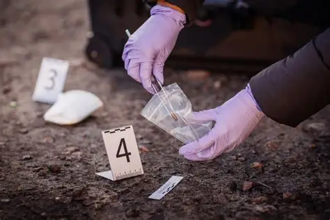

La criminología es una ciencia multidisciplinaria que busca entender el "por qué" detrás del delito. No le interesa recoger el arma homicida, sino comprender qué pasaba por la mente de la persona que decidió apretar el gatillo o cometer el fraude.
Esta ciencia se apoya en la psicología, la sociología y la antropología para crear un perfil del delincuente. Los criminólogos estudian el entorno social, la educación, y los traumas pasados de un individuo para encontrar el origen de su comportamiento antisocial.

Además, la criminología no solo se enfoca en el agresor, sino también en la víctima. La victimología es una rama crucial que analiza por qué ciertas personas son elegidas como blanco y cómo el sistema de justicia puede ayudarlas a superar el trauma.
Uno de los objetivos más nobles de esta disciplina es la prevención. Al entender cómo y por qué operan los criminales, los gobiernos pueden crear políticas públicas, mejorar la iluminación en calles peligrosas o implementar programas de ayuda para jóvenes en riesgo.
"El crimen rara vez es producto de la casualidad; casi siempre es el resultado de una suma de factores que estallan en el momento menos esperado."